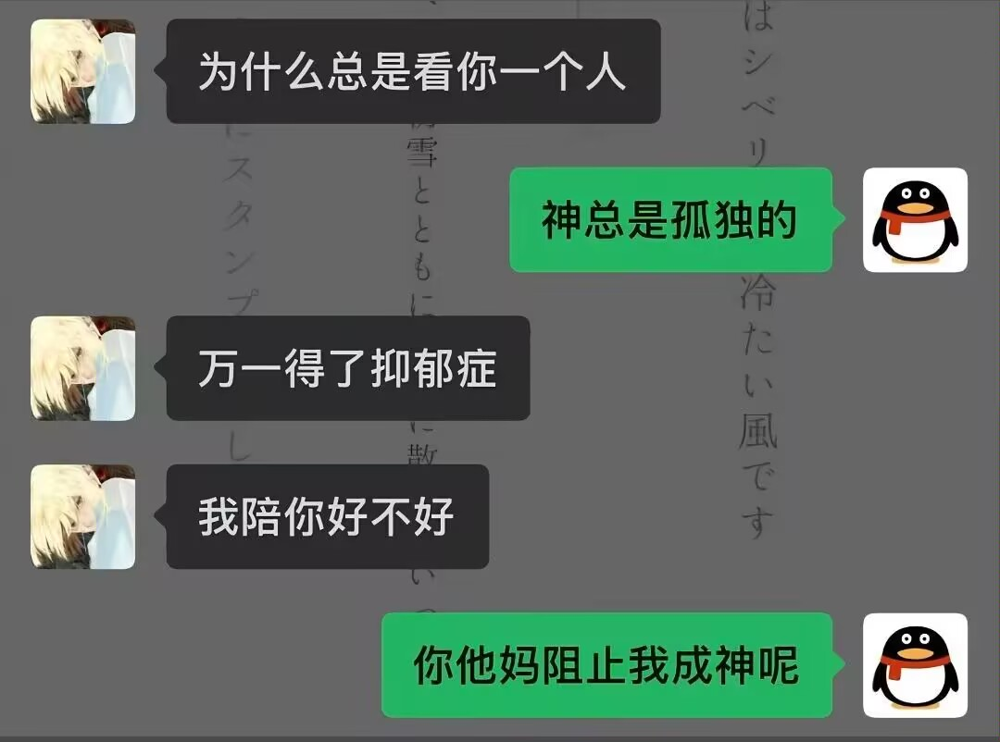

绫绫绫
@ayameeii
@Utsuho_223 晚安安

lingwlk
@Utsuho_223
晚上好
最近宿舍不到十一点就都关灯上床了）现在我对面的哥们已经打上呼噜了，最健康的一集
还有个舍友流感了…最不健康的一集
啥时候能下个雪呢，感觉入冬也有段时间了吧）
每天干活整得有点麻，晚上回到宿舍都没兴致玩游戏……为数不多的慰藉是学校食堂饭还不赖
又过一天，睡觉，各位好梦~ https://t.co/qtYDI0746b